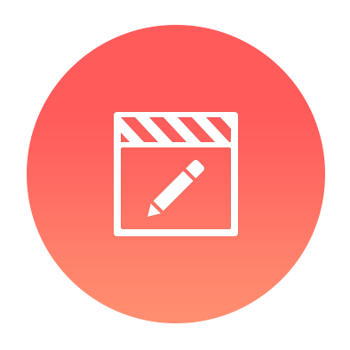
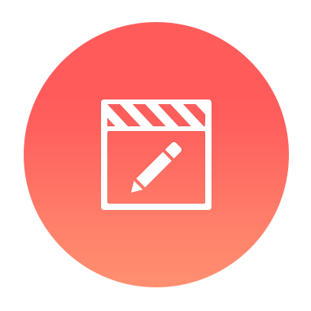

to create a project.
to create a project. . to create a project..
. to create a project..Exported videos can be found in the device's "export" folder (in KineMaster/Export/).
When KineMaster first opens, existing projects are now displayed in a list that can be scrolled up and down.
The list is arranged with the most recently edited projects at the top; to sort the list alphabetically, as it was in earlier KineMaster versions, you can change the sorting order in settings.
To play , share
, share , edit , or delete
, edit , or delete a project, tap the project thumbnail to open the project details and options.
a project, tap the project thumbnail to open the project details and options.

When editing a project, buttons to undo or redo edits, and change the theme
or redo edits, and change the theme  now appear to the left of the video preview screen.
now appear to the left of the video preview screen.  is also available so that projects can now be shared directly as soon as editing is finished.
is also available so that projects can now be shared directly as soon as editing is finished.
Tap  to change project settings.
to change project settings.

To the right of video preview, buttons for adding media  and audio
and audio  are still available, but narration can now be recorded directly with Voice
are still available, but narration can now be recorded directly with Voice  . Tap
. Tap  to take pictures with the camera or record new video with the camcorder.
to take pictures with the camera or record new video with the camcorder.
To add a sticker or handwriting to a project now, add a layer to the project by tapping  .
.
The timeline can be expanded by tapping  rather than swiping up, and
rather than swiping up, and  jumps the playhead to the start of the project now.
jumps the playhead to the start of the project now.
To delete a clip now, tap it and then tap  to the left of the video preview.
to the left of the video preview.
Tapping a clip still displays effect editing options but they appear as an extended list to the right of the video preview

To capture a frame from a clip as an image, tap  on the left for capture options but to split and insert a freeze frame now, open the Trim/Split menu on the right. Share a project directly from the editing screen now, as well as from the project details, by tapping
on the left for capture options but to split and insert a freeze frame now, open the Trim/Split menu on the right. Share a project directly from the editing screen now, as well as from the project details, by tapping  . Select the sharing destination first and then choose the quality level. Choose a subscription if desired after selecting where to share.
. Select the sharing destination first and then choose the quality level. Choose a subscription if desired after selecting where to share.